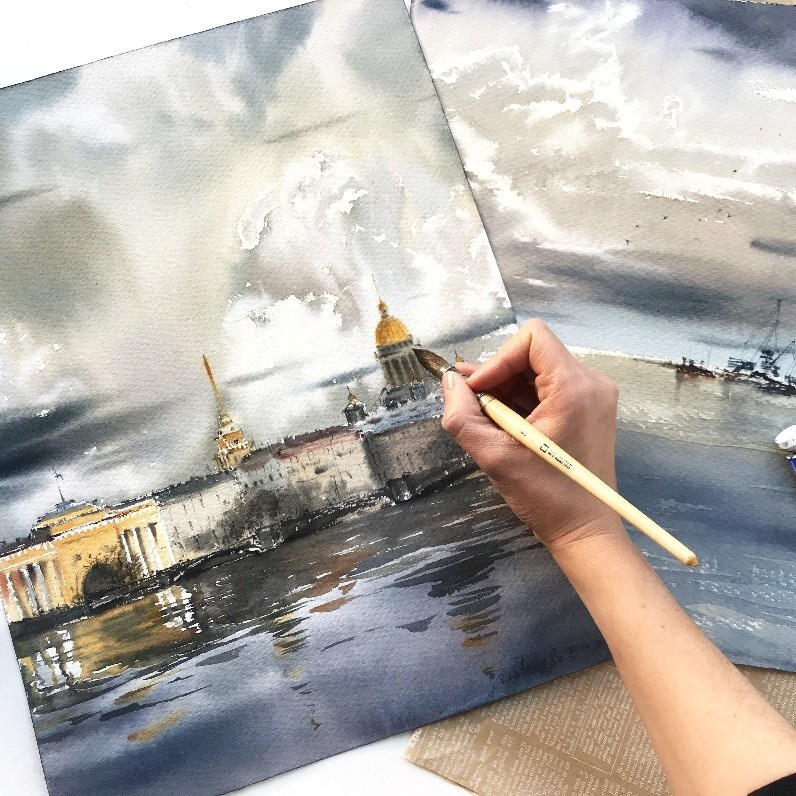
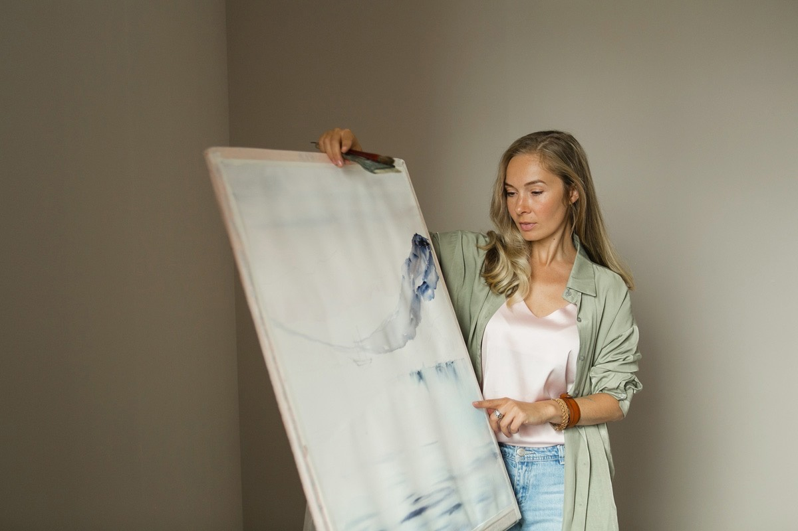
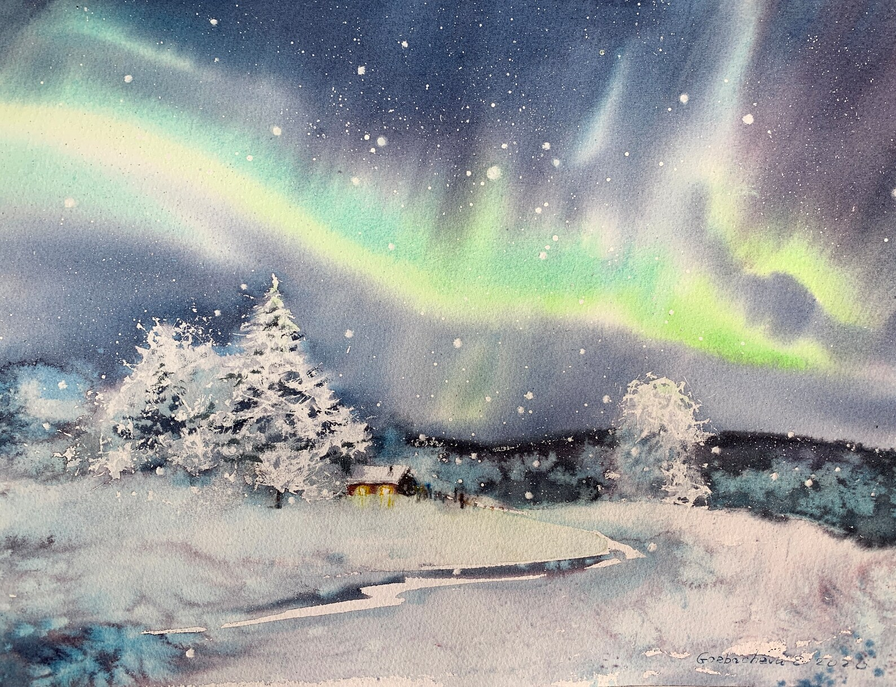
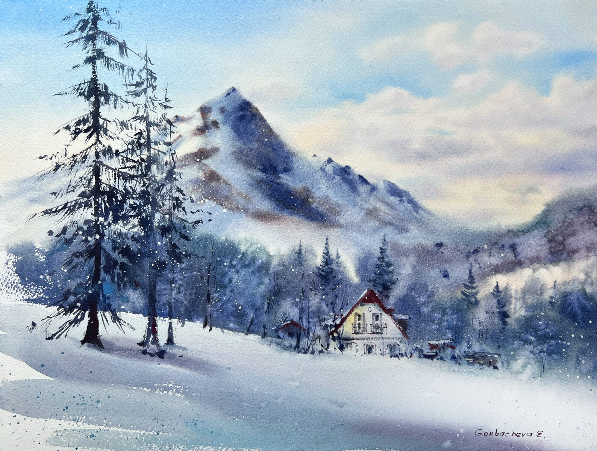
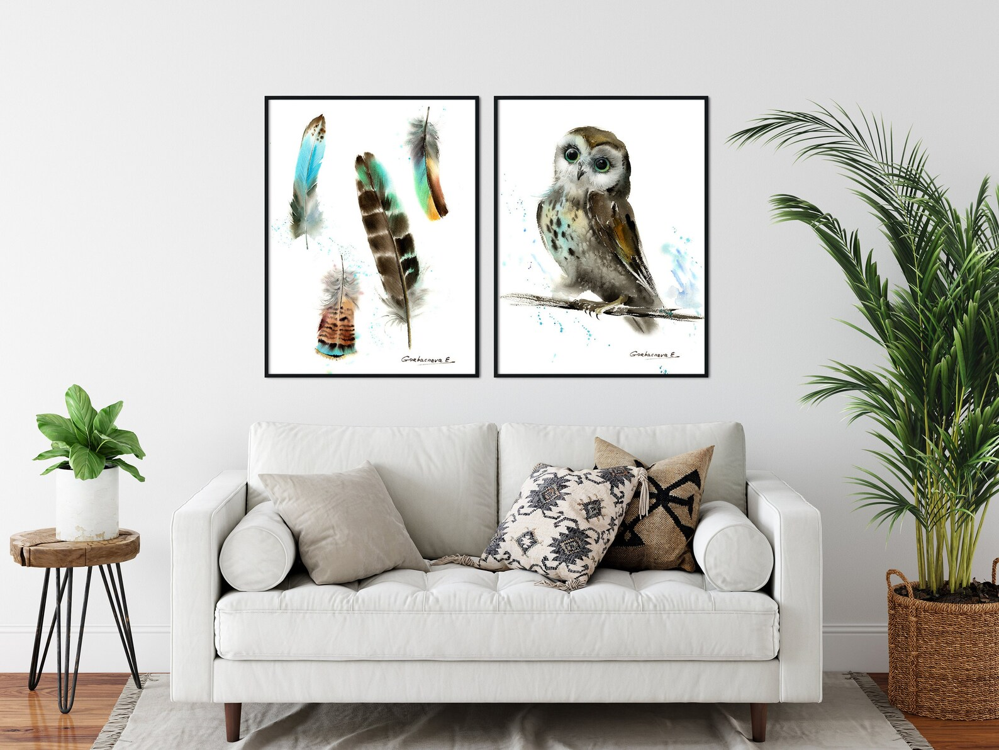
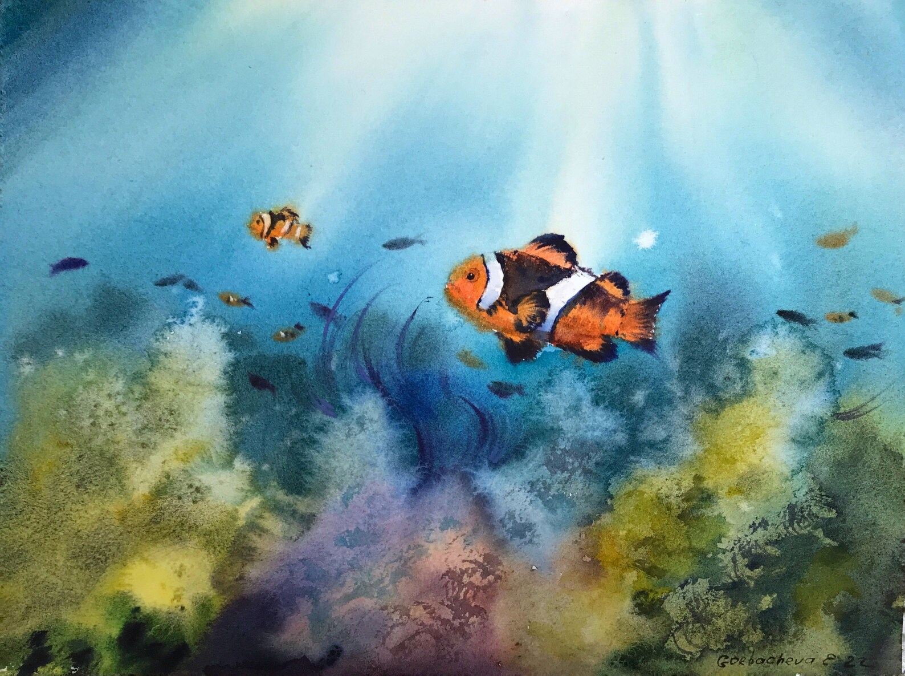
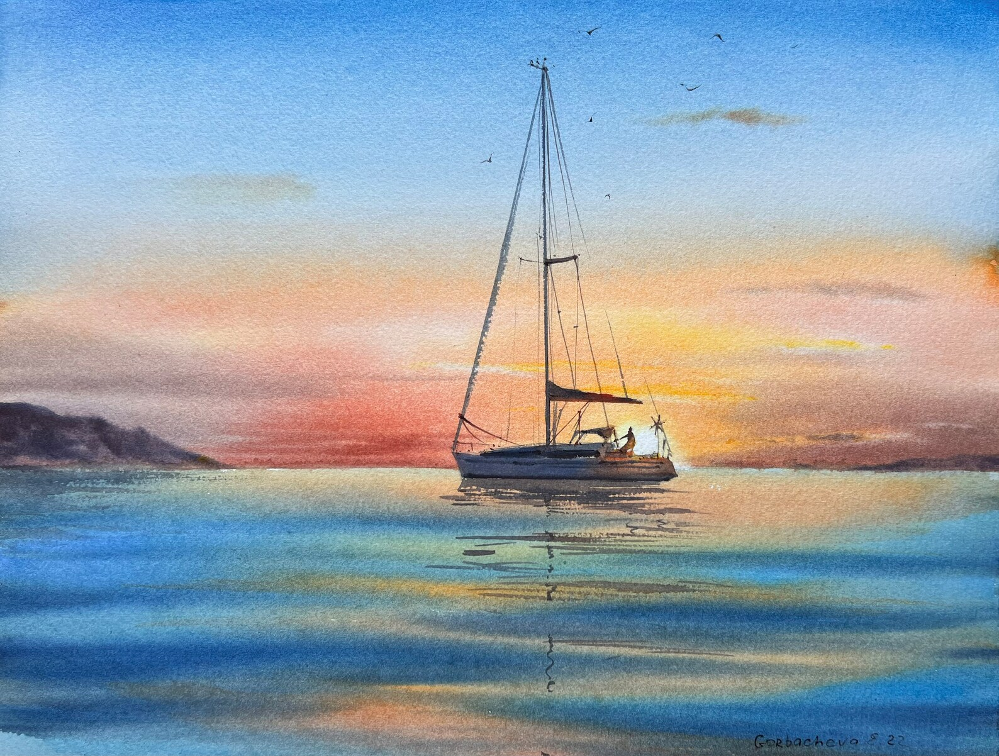
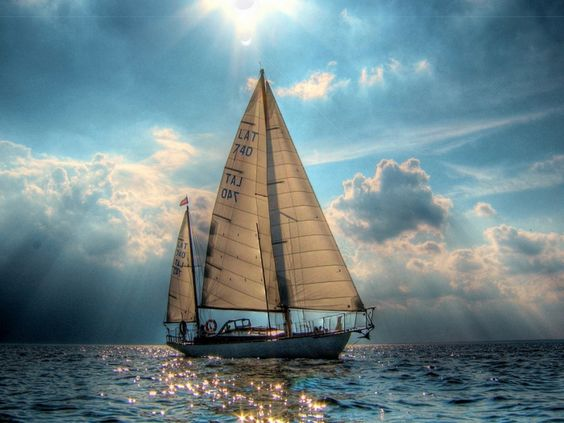

Художник акварелист
Евгения Горбачева

Кипр
Биография
Образование
Выставки
Работы
NFT
Курсы
Контакты
Биография

Я художник-акварелист и модельер. 10 лет я занималась созданием модной одежды,
но сейчас решила полностью посвятить себя акварельной живописи.
Меня вдохновляет творчество моей семьи и окружающего мира.
Образование
- 1997 - 2001 Школа искусств в г. Жуковском
- 2002 - 2007 Российский Государственный Университет им. А.Н. Косыгина
(Технология, Дизайн, Искусство)
Выставки
- 23 октября 2021 г. - 1 ноября 2021 г. - Biennale d'Aquarelle de Coquelles / Salle JP Poidevin, Rue des Châtaigniers, 62231 Coquelles
Третий выпуск Международной биеннале акварели Coquelles
- 4 сентября 2020 г. - 13 сентября 2020 г. - 2nd RUSSIAN ВЫСТАВКА АКВАРЕЛИСТА В ГАЛЕРЕЕ IWS SARE, МОСКВА, Россия
Моя картина "Река и облако" была выбрана жюри и получила приз от спонсора.
- 15.03.2020 - 3.04.2020 - "Акварельный горизонт" / Персональная выставка Горбачевой Евгении / Галерея Line Art, Жуковский, Россия
- 1 февраля 2019 г. - 9 февраля 2019 г. - 1-Я ВЫСТАВКА РОССИЙСКИХ ХУДОЖНИКОВ В IWS SARE GALLERY / Галерея IWS Sare / Москва, Россия
Моя картина "Ариадна" была выбрана жюри и получила приз от спонсора.
- 29 ноября 2019 г. - 22 декабря 2019 г. - Мелодия Акварель / Галерея Арт Кремль / Москва, Россия
- 9 ноября 2019 г. - 14 ноября 2019 г. - 1-й Международный онлайн-конкурс акварели / Галерея IWS Sare / Москва, Россия
Работы







NFT
NFT Rarible
Курсы
Контакты
Twitter
VK
Instagram